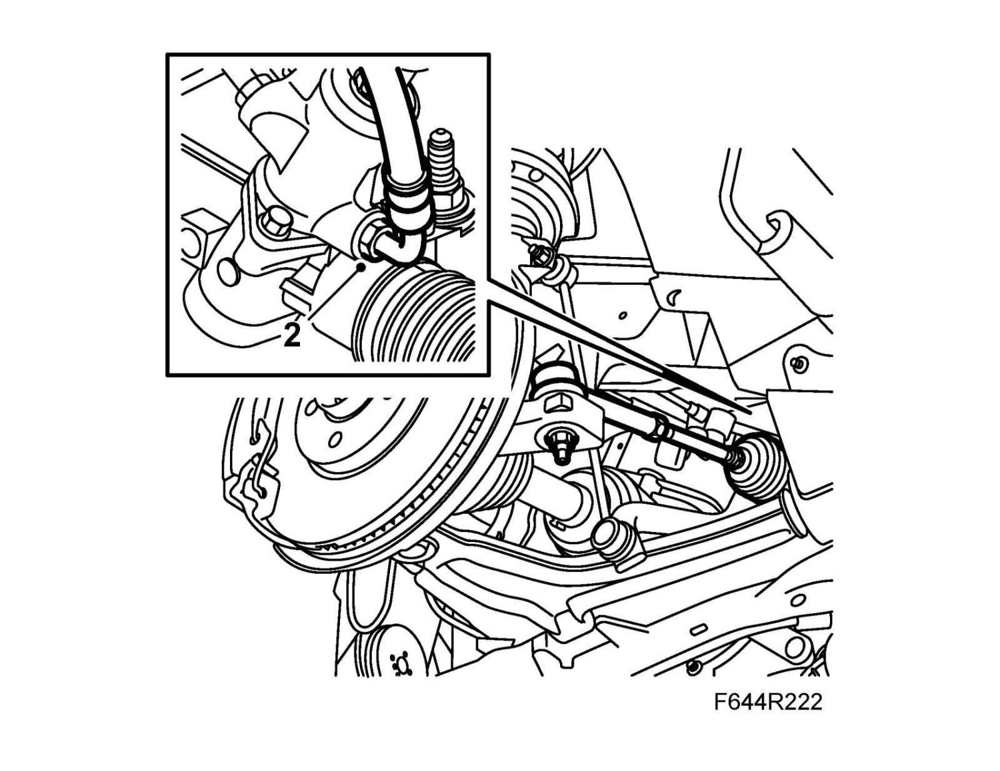
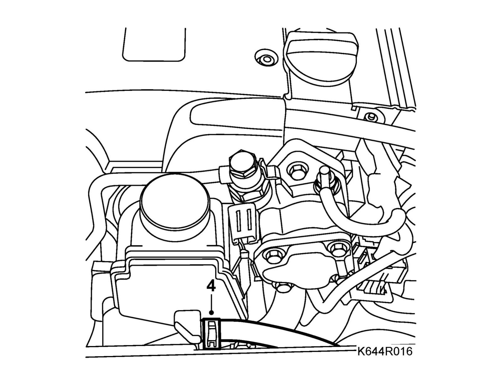

Power Steering Return Pipe
Power steering return line, B207 LHDImportant
Scrupulous cleanliness must always be observed during all work with hydraulic components.
To remove
1. Remove the driver-side wheel.
2. Open the reservoir cap.
3. Raise the car.
4. Disconnect the return line from the steering gear and allow the fluid to drain into a suitable receptacle.
5. Lower the car to the floor.
6. Remove the line from the reservoir.
7. Raise the car and pull our the line from under the car.
To fit
1. Fit the line in place.
2. Attach the line to the steering gear. Make sure the O-ring is correctly seated.
Tightening torque 28 Nm (21 lbf ft)

3. Lower the car to the floor.
4. Attach the line to the power steering fluid reservoir.

5. Fill with fluid and bleed the power steering system.
6. Fit the wheel.